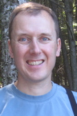
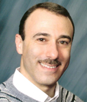

|  |  |
|
Steve has been developing object-oriented software applications since 1989, often as part of geographically distributed teams. He has been an active member of the Software Patterns community since the first PLoP conference in 1994, and did early work on the relationship between organization, software architecture, and design patterns. He has an M.S. in Operations Research from Stanford University and an S.B. in Electrical Engineering from MIT. |
Brad has been a software developer since 1987 and has extensive experience using, developing, and supporting SCM environments for teams of all shapes and sizes. A former Patterns++ section editor for the C++ Report, Brad is also well versed in object-oriented design and agile software development, and cofounded the Chicago Patterns and Chicago Agile Development Groups. He holds an M.S. in Software Engineering and a B.S. in Computer Science and Mathematics. |